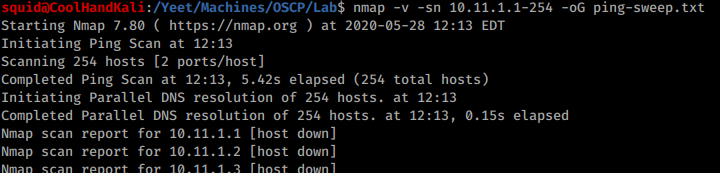
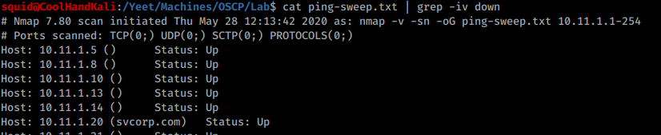
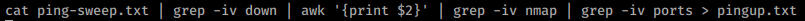
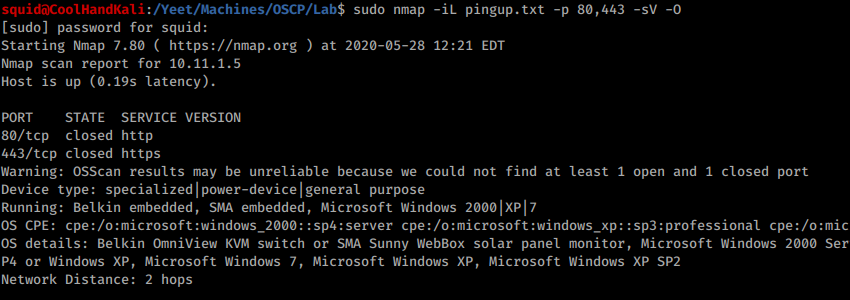
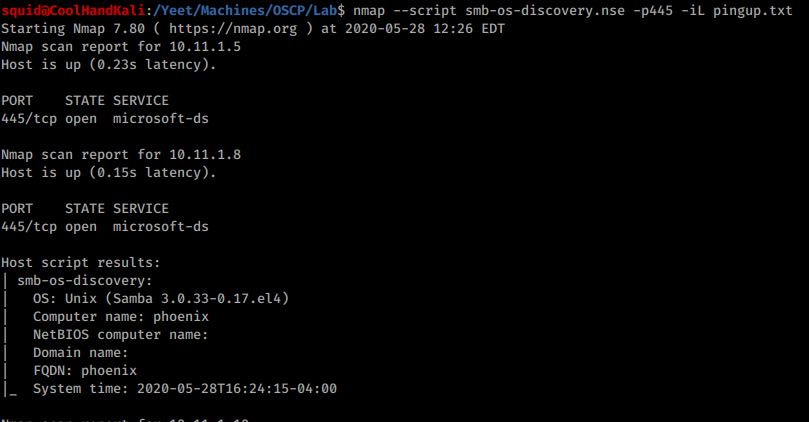
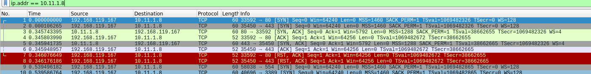
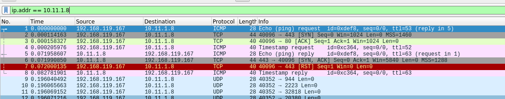
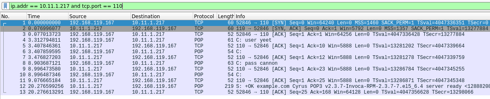
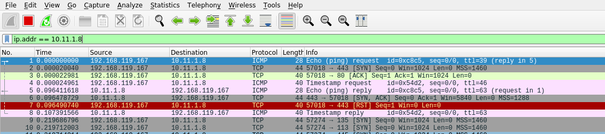

7.2.2.9 Exercises
☐ Use Nmap to conduct a ping sweep of your target IP range and save the output to a file. Use grep to show machines that are online.
☐ Scan the IP addresses you found in exercise 1 for open webserver ports. Use Nmap to find the webserver and operating system versions.
☐ Use NSE scripts to scan the machines in the labs that are running the SMB service.
☐ Use Wireshark to capture a Nmap connect and UDP scan and compare it against the Netcat port scans. Are they the same or different?
connect
UDP
nc
The connect and UDP scans are different from one another becasue the connect scan uses TCP. Tcp scans will begin with a three way handshake ([SYN], [SYN, ACK], [ACK]) as seen in the connect scan and in the nc scan from previously.
☐ Use Wireshark to capture a Nmap SYN scan and compare it to a connect scan and identify the difference between them.
SYN
connect
SYN scans are diffent from connect scans becasue the three way handshake is never completed in a syn scan. The scanning machine may recieve a [SYN, ACK], but won't complete the connection with an [ACK].